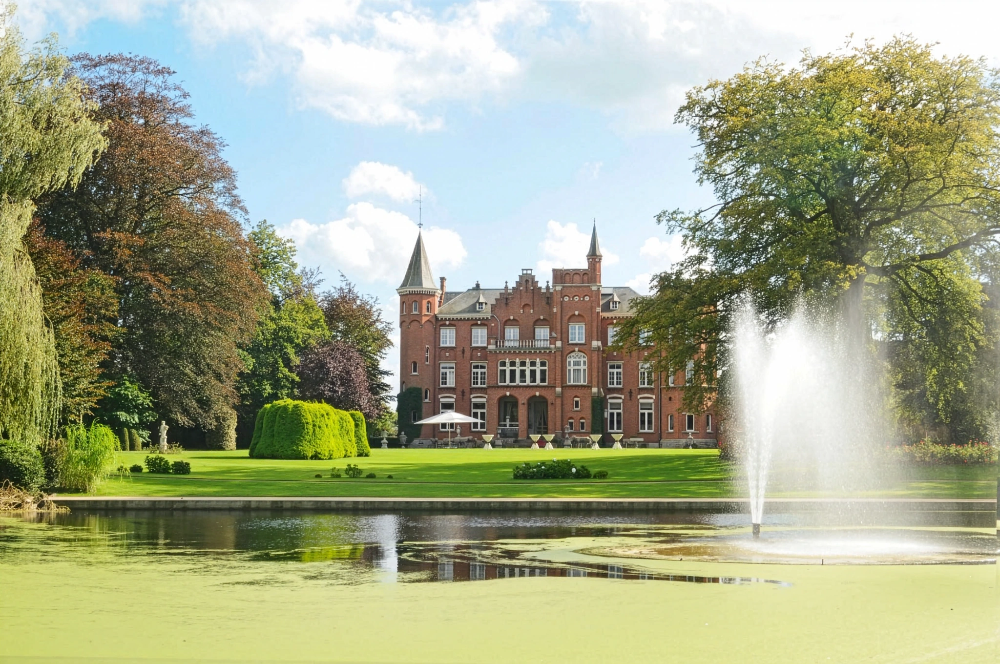

Wij gaan trouwen!
Liefste familie en vrienden
Op zaterdag 27 maart 2027, exact vijf jaar samen, bezegelen wij onze liefde met een huwelijksceremonie en feest in het kasteel Lodewijk van Male in Brugge. We kijken er ontzettend naar uit om die bijzondere dag te delen met de mensen die ons dierbaar zijn. Daarom tellen we nu al af met het aftelklokje op deze website.
Hoewel we nog niet weten wat voor weer het zal zijn tijdens deze eerste week van de lente, maken we er sowieso een warme, feestelijke en vooral onvergetelijke dag van.
We hopen dan ook van harte dat jullie erbij kunnen zijn om samen met ons te vieren!
Liefs,
Tom en Sarah
P.S. Op deze website vinden jullie ook al heel wat praktische informatie. Ga dus zeker op verkenning!
27 maart 2027
Lodewijk van Male · Brugge
RSVP vóór 1 januari 2027
We tellen af
Tot onze trouwdag
—dagen
—uren
—minuten
—seconden